Bilder

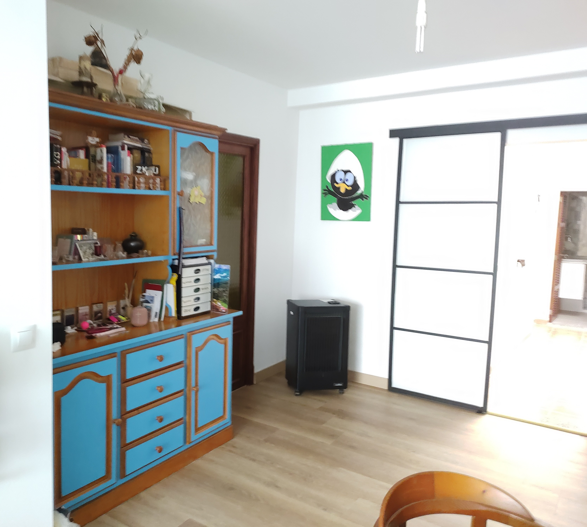
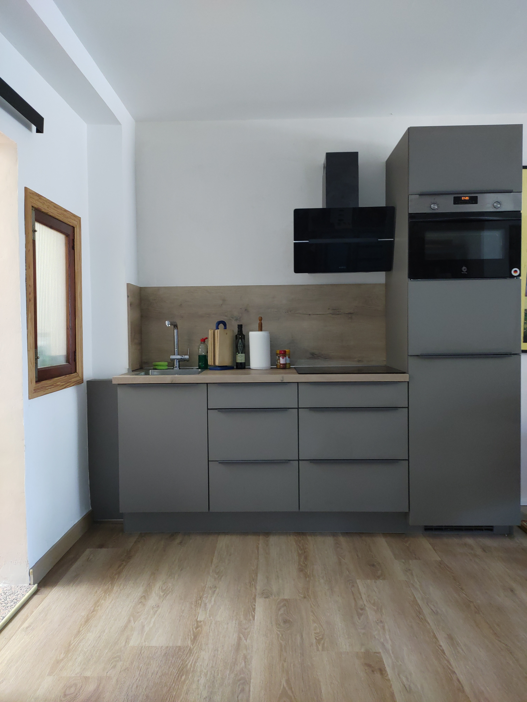
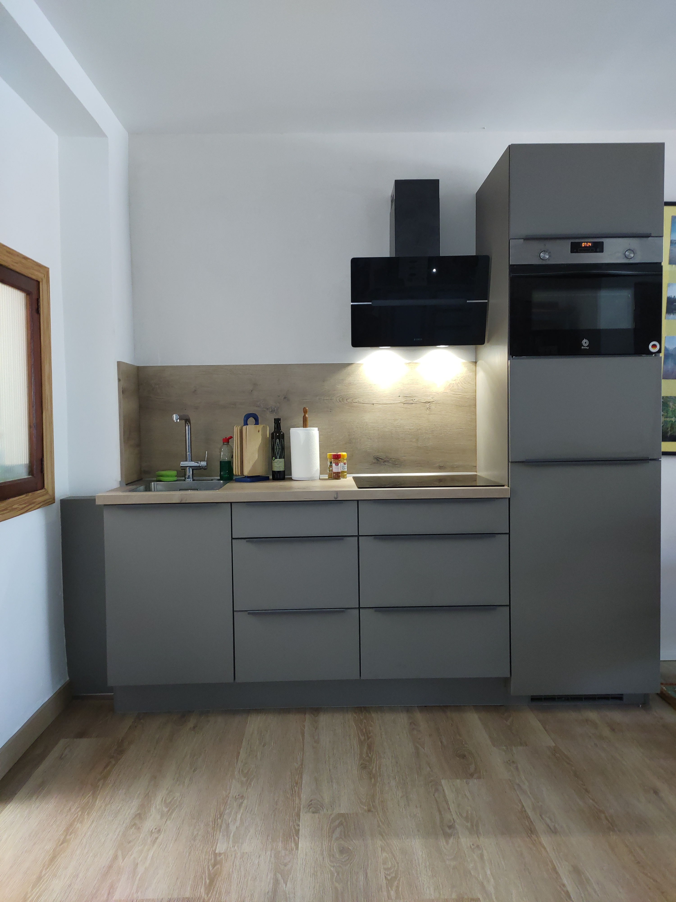
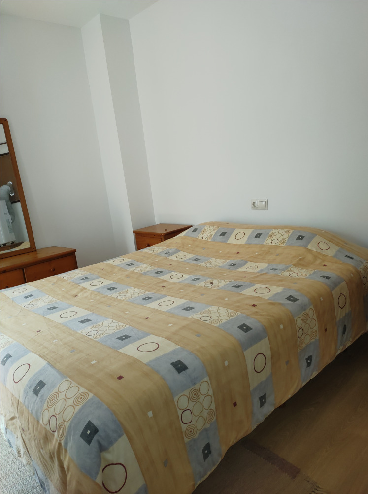

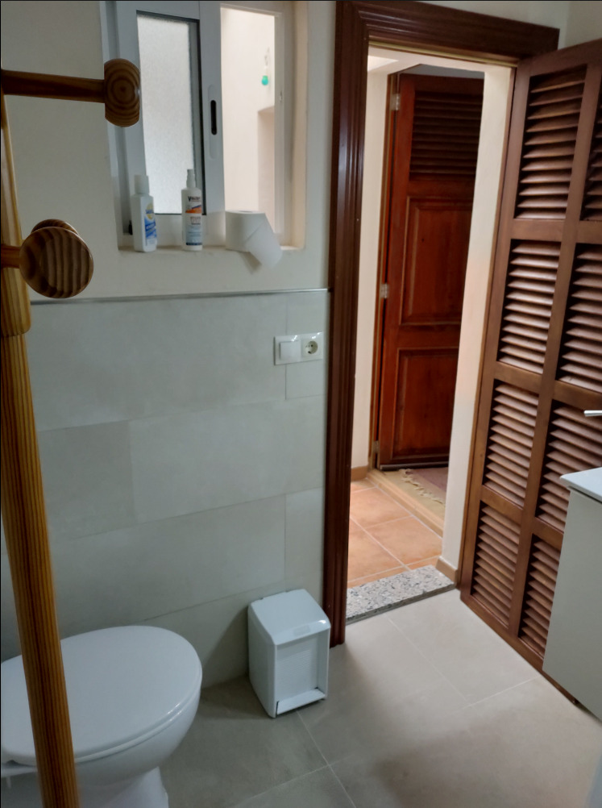
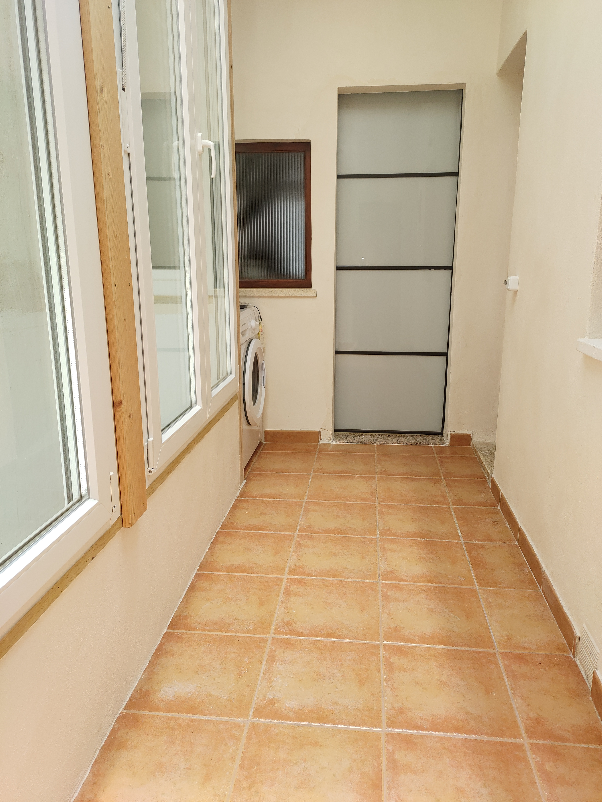


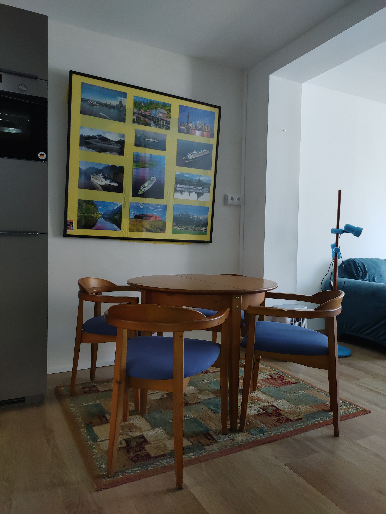
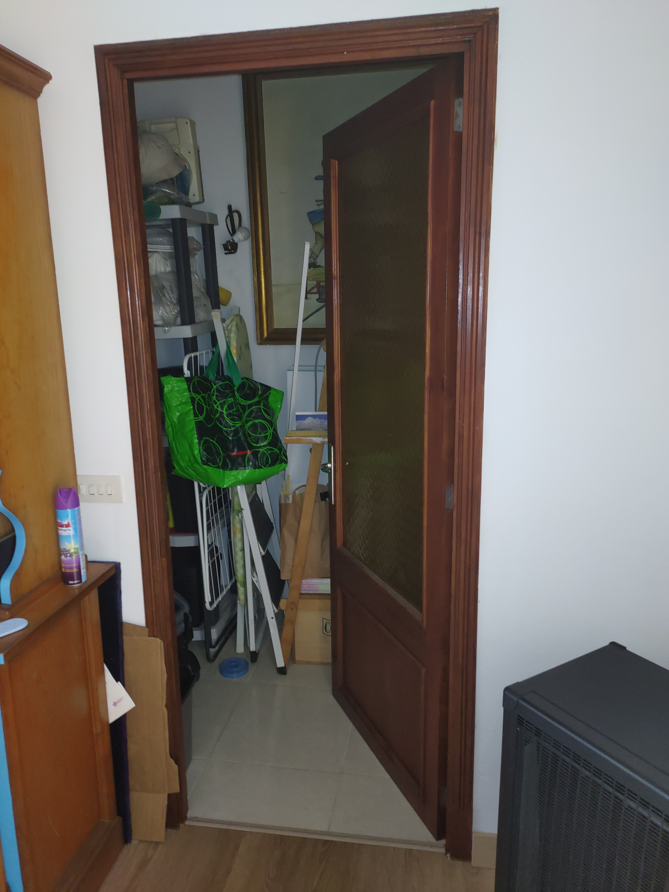
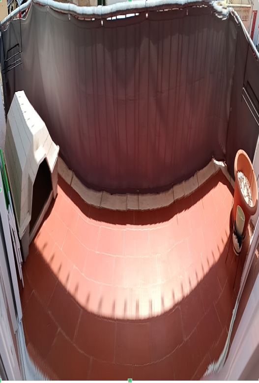
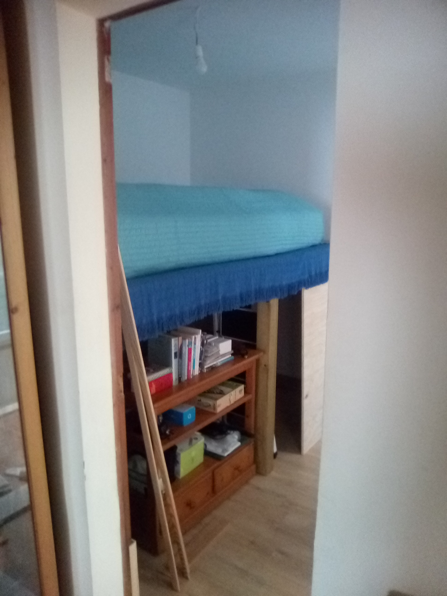
Porto Cristo · Mallorca
69 m² · 3 Zimmer · 2 Schlafzimmer · Balkon
Nur 1 Gehminute vom Strand
Entdecken Sie diese stilvolle und vollständig renovierte Wohnung im Herzen von Porto Cristo, einem der beliebtesten Küstenorte an der Ostküste Mallorcas.
Die zentrale Lage ist ein besonderes Highlight: Der Strand ist nur eine Gehminute entfernt. Auch der Hafen, Restaurants, Einkaufsmöglichkeiten sowie das Gesundheitszentrum sind bequem zu Fuß erreichbar.
Die Immobilie bietet ca. 69 m² bebaute Fläche und überzeugt durch ihre durchdachte Raumaufteilung, ihre außergewöhnliche Helligkeit und ihre umfassende Renovierung.
Die Wohnung verfügt über zwei Schlafzimmer, ein Badezimmer, einen separaten Abstellraum sowie einen großzügigen, offen gestalteten Wohnbereich mit Lounge, Essecke und einer offenen Küche im amerikanischen Stil. Eines der Schlafzimmer ist mit einem komfortablen Doppelbett ausgestattet, während das zweite Schlafzimmer über ein Hochbett verfügt.
Das Herzstück der Wohnung ist der großzügige Wohnbereich, der ursprünglich aus zwei separaten Räumen bestand. Im Zuge der Renovierung wurden diese miteinander verbunden und zu einem offenen und harmonischen Wohnkonzept gestaltet. Heute gehen Wohnbereich, Essplatz und offene Küche fließend ineinander über.
Ein besonderer Bestandteil der Wohnung ist der traditionelle Patio de Luz. Dieser zentrale, lichtdurchflutete Innenbereich verbindet alle Räume miteinander – den Wohnbereich mit Küche, beide Schlafzimmer und das Badezimmer. Durch den Patio gelangt zusätzlich viel Tageslicht in die Wohnung und es entsteht eine angenehme, offene Atmosphäre. Hier befindet sich außerdem die Waschmaschine.
Im Zuge der umfassenden Sanierung wurden zusätzliche Wand- und Deckenkonstruktionen mit Schall- und Feuchtigkeitsschutz installiert. Diese Maßnahmen tragen zu einem angenehmen Raumklima bei und erhöhen den Wohnkomfort zu jeder Jahreszeit.
In allen Wohnräumen wurde ein durchgängiger Laminatboden verlegt, der der Wohnung ein modernes und harmonisches Gesamtbild verleiht. Große Fensterflächen sorgen zusätzlich für viel Tageslicht und eine freundliche, einladende Wohnatmosphäre.
Ein separater Abstellraum bietet praktischen zusätzlichen Stauraum und kann ideal für Vorräte, Haushaltsgegenstände oder persönliche Dinge genutzt werden.










Porto Cristo zählt zu den beliebtesten Küstenorten im Osten Mallorcas. Die Kombination aus Hafen, Strand, Restaurants und ganzjähriger Infrastruktur macht den Ort sowohl für Eigennutzer als auch für Investoren besonders attraktiv.

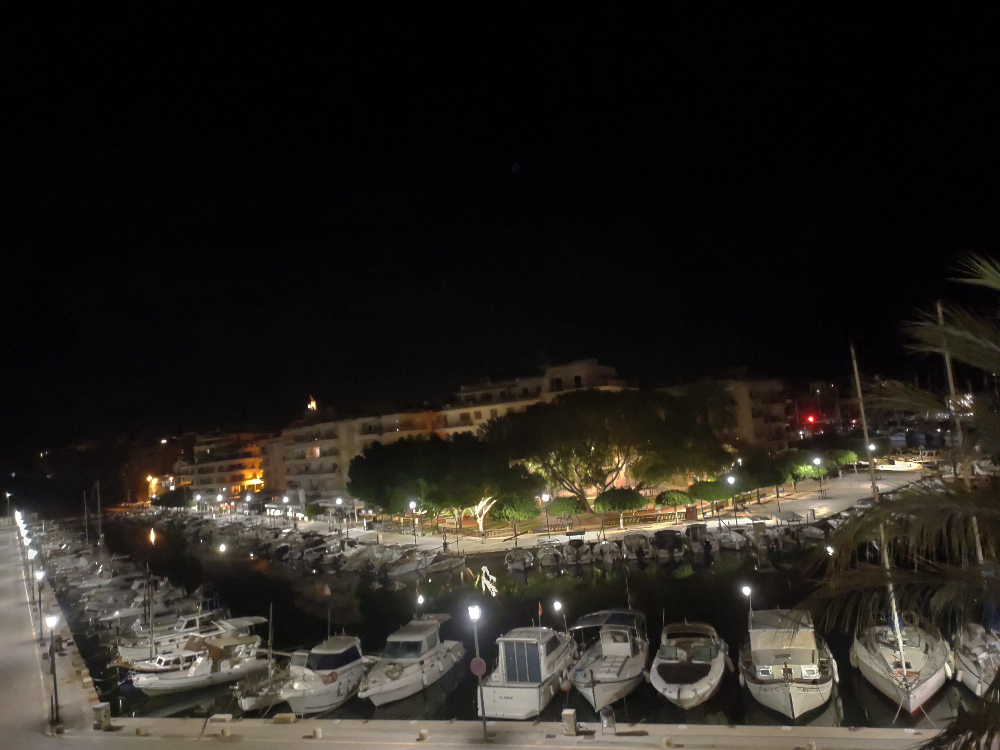


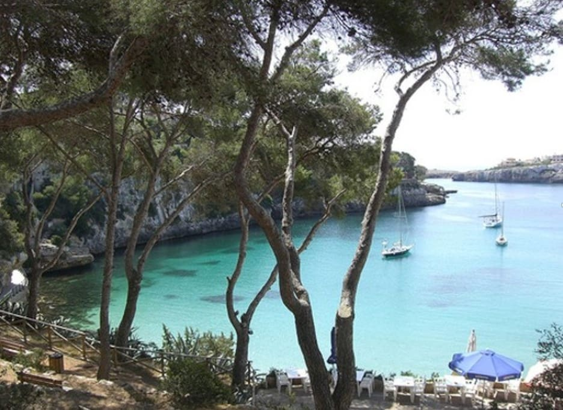
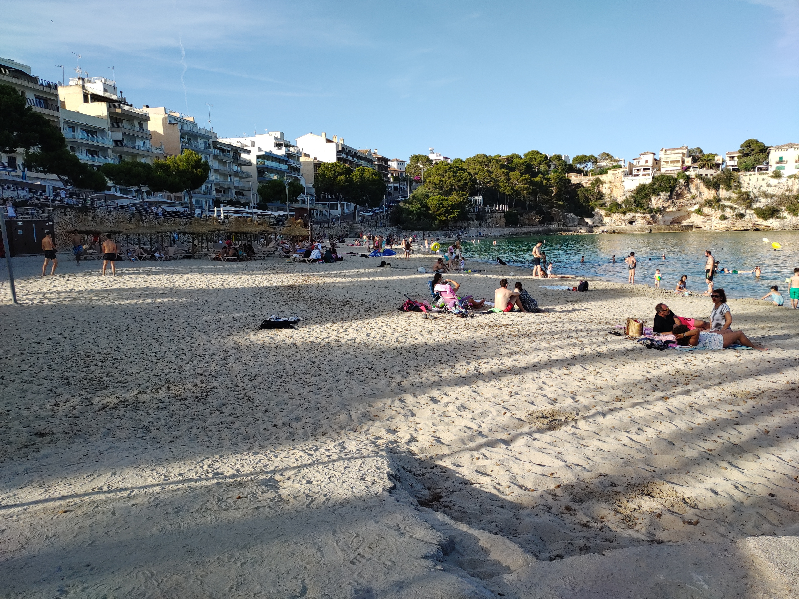

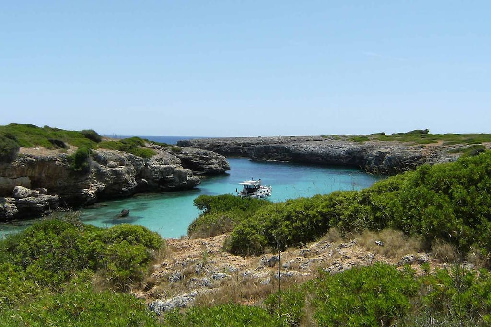
Nur 1 Gehminute zum Strand
Restaurants, Hafen und Einkaufsmöglichkeiten fußläufig
Angenehme Wohnatmosphäre durch verbesserte Dämmung
Schutz vor Feuchtigkeit durch moderne Wandkonstruktionen
Patio de Luz und große Fenster sorgen für viel Tageslicht
Umfassende Renovierung der gesamten Wohnung
🏖️ 1 Minute zum Strand
⚓ Hafen fußläufig
🍽️ Restaurants & Cafés in der Nähe
🛒 Einkaufsmöglichkeiten nah
🏥 Ärztezentrum nur 1 Gehminute entfernt
🚌 Gute Verbindung nach Palma
🕳️ Nähe Drachenhöhlen
🎾 Nähe Rafa Nadal Academy
Vollständig renovierte Wohnung mit moderner Ausstattung und angenehmem Wohnkomfort zu jeder Jahreszeit
Nur eine Gehminute zum Strand und idealer Ausgangspunkt für Aufenthalte auf Mallorca
Attraktive Lage in Porto Cristo mit hoher Nachfrage nach Ferienwohnungen
📲 Kontakt bequem per WhatsApp
Weitere Informationen und Besichtigungstermine auf Anfrage.
Antwort meist innerhalb von 24 Stunden.